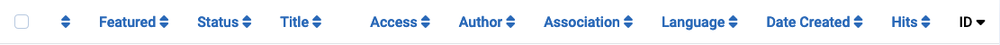
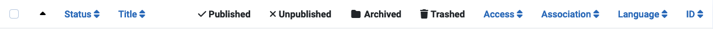
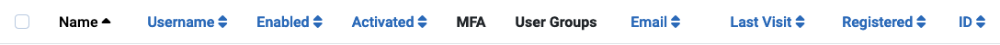

Column Headers appear in list views to indicate the nature of the information
in that column. The headers vary from component to component. Many column
headers can be used to sort the list on that column but this is not always
the case. For example, in Category list views the four State columns are
not used for ordering as all of the items in those columns have the same
state.
Some examples
The Articles list Column Headers

The Categories list Column Headers

The Users list Column Headers

Order by Column
To change the list order select the column list ordering icon. In a column not
being used for ordering this is a double up/down chevron
().
For the column used for ordering it is either an up chevron
() or down chevron
() to indicate
the current ordering direction, ascending or descending.
Some Common Headers
Checkbox To select all articles, check the box in the column heading.
The toolbar button 'Actions' becomes active. An action may be applied to the
items visible in the page. It is not applied to items in subsequent pages
that are not visible.
Ordering You can change the order of an article within a list as
follows:
In the Filter Options limit the list to items to be ordered, for example
items in a selected Language or items by a selected Author.
Select the ordering icon in the first
column heading to make it active.
Select one of the vertical ellipsis icons
that appear when ordering is active and drag it up or down to change the
position of that row in the list.
Title or Name The title of the item is usually a link to the
Edit page for that item.
ID A unique identification number for this article. It cannot be changed.